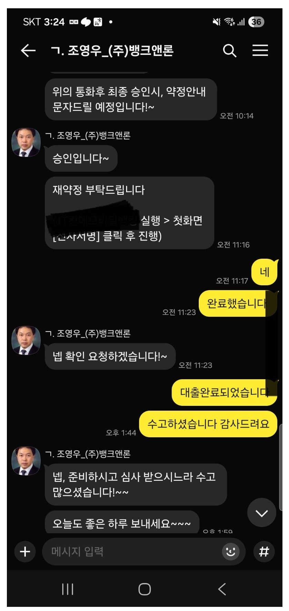
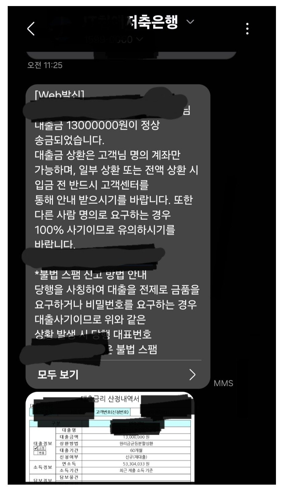

[직장인대출] 조영우 이사님과 대출후기입니다


재직형태: 직장인
재직기간: 13년
사대보험 가입유무: 유
소득: 연5300만원
신용등급: 600점이상
채무내역: 저축은행 3500백만원, 카드론 1700만원
필요서류: 신분증, 등본, 원초본, 건강보험득실확인서, 납부확인서
일전에 조이사님 도움을 받았었는대, 대환대출로 이자율을 낮추고자 하였으나 대환은 부결되고 그보다 좀 더 이자율을 낮게 적은 금액으로 대출을 받았았어요. 큰 도움이 되었습니다. 조이사님께 감사드려요 연휴중간이라 급하게 진행하다가 하루 쉬고 오늘 승인이 났습니다. 잘상환하고 다음에 대환도 잘 부탁드리겠습니다. 감사합니다
https://cafe.naver.com/cityman88/311157